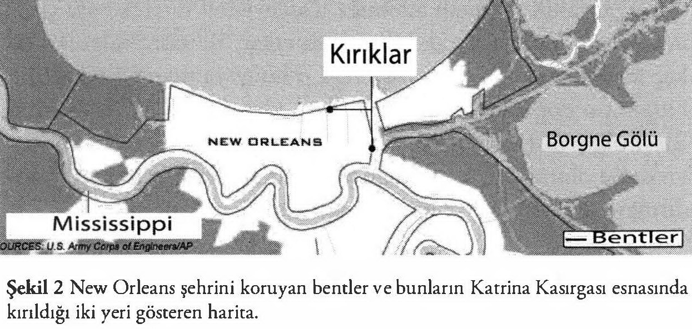

Cumhuriyet okurları Katrina tropik fırtınasının ABD’nin güneyinde yarattığı korkunç hasarın insanın tüylerini ürperten resimlerini gördüler, haberlerini okudular. Akıllarına şu soru gelmiş olabilir: Böyle bir felaket ABD gibi “ileri” bir ülkede nasıl olabildi? ABD’li bilim adamları, mühendisler bunun geleceğini görememişler miydi? Niçin gerekli önlemler alınmadı?
Bu felâket de jeolojinin konusu içerisindedir. Üstelik felâketin hemen akabinde, ben evimde ABD’nin tıp camiasının iki mümtaz simasını misafir ediyordum (jeolog bir arkadaşımın annesi ve babası oldukları için). Kendileri ABD’nin üst düzey bilim kuruluşlarının üyesi oldukları için ister istemez felâketin nedenleri hakkında bilgi sahibi olmuşlar.
Bilindiği gibi New Orleans Mississippi Deltası’nın kuzeydoğu kenarında Pontchartrain Gölü (lâgün) ile Mississippi’nin deltayı besleyen faal ana yatağının arasında kurulmuştur. Nehir, şehir içerisinden kuzeye konkav büyük bir menderes yaparak geçer.
Yer yer nehir ve lâgün seviyesinin altındaki nehri taşkınlardan korumak için büyük bentler, yani koruma duvarları vücuda getirilmiştir. Anacak bu koruma duvarları sürekli erozyon tehdidi altında oldukları için belirli aralıklarla bakımlarının yapılması gerekmektedir. Nehir normal zamanlarda sakin sakin akar. Bu zamanlarda erozyon işlevi âdeta rölantidedir. Ancak taşkınlarda ve büyük fırtınalarda nehrin su rejimindeki ani değişiklikler, erozyon ve çökelme işlevlerini çok hızlandırır. Öyle ki, bu durumlarda nehir on yıllarda yapmadığı işi birkaç gün, bazen birkaç saat içinde yapar. Denize bağlı olan lâgün de öyledir. Fırtına deniz seviyesini yükselterek bentlere yüklenebilir. Ancak bu “kriz” davranışı önceden görülemeyecek bir davranış değildir. Coğrafyacılar, jeologlar ve meteorologlar nehrin ve lâgünün kriz zamanlarını ve bu zamanlarda neler yapabileceğini modellemişler, mühendisler şehri buna karşı koruyabilmek için tedbirler düşünmüşlerdir. Bu tedbirlerin başta geleni bentlerin bakımıdır. Gelgelelim dostlarımdan duyduğum, Bush yönetiminin bentlerin bakım paralarını kestiği, örneğin, bu yıl bent bakımı için gerekli paranın ancak onda birinin temin edilebildiğidir (bentlerin kırıldığı iki yer için haritaya bkz)! Yani New Orleans felâketi, kısmen de olsa Bush yönetiminin ihmallerinin bir sonucudur. Irak’taki coğrafya cehaletleri binleri ölüme, parayla ölçülemeyecek kültürel hazinelerin kaybına yol açan zır cahil politikacılar, New Orleans’ta da binlerce yurttaşlarının ölümüne, daha nicelerinin yersiz yurtsuz kalmasına, bir sürü kadının ve kızın ırzlarına geçilmesine, Amerikan tarihinde eşine az rastlanır yağmaların olmasına neden olmuşlardır.

Ancak suç sırf Bush yönetiminin değildir. Daha önceki yönetimler dönemlerinde de bariyer adalarının ortadan kaldırılarak su altındaki alanların doldurulup iskâna açılması da felâketin nedenleri arasındadır.
Doğa, cahili ve aptalı affetmez. Doğayla oy vererek başa çıkamazsınız. Doğayla ancak bilim başa çıkar. Bilimin bulguları da kaç kişinin o bulguyu yaptığı veya o bulguya inandığı ile değil, bulgunun doğanın gerçekleriyle ne kadar örtüştüğü ile ölçülür. Bir bulgu doğanın gerçekleriyle örtüşmüyorsa ona inananın sayısı ne olursa olsun, o bulgu yanlıştır ve yaşamını ona dayandırmaya kalkanın suratına doğa sonunda şamarını indirir.
İnsan toplumları kendilerini yönetecekleri doğa cahilleri arasından seçerlerse kendi idam fermanlarını kendi elleriyle imzalamış olurlar. Her yönetici doğa bilgini olmak durunda değildir, ama her yönetici doğa bilimcilere danışacak, onların dediklerini anlayacak kadar doğa bilimlerine vakıf olmalıdır. Bir doğa afetinden sonra “takdiri ilahi” diyen her yönetici aslında kendini yöneticiliğe getirmiş topluma ihanet ediyor demektir. Hiçbir doğa afeti “takdiri ilâhı” olmayıp, önceden bilinebilecek ve belirli zaman ve mekan sınırları dahilinde öngörülebilecek doğa olaylarının sonucudur. Bu doğa olaylarını bilmek bilimin, bilimi desteklemek de toplum yöneticilerinin görevidir.
Araştırma kurumlarını, üniversitelerini ve diğer eğitim kurumlarını tahrip eden, buralarda kalitenin yeşermesine imkân vermeyen, toplum yönetiminde bilimi dinlemeyen yöneticiler toplumlarının felâketini hazırlıyorlar demektir. Ülkemizde de neredeyse her gün gazetelerde halihazırdaki hükümetin TÜBİTAK’ı bilimsel olarak yetersiz yandaşlarına teslim etmek için, hatta kanun dışına çıkmaktan çekinmediğini, üniversiteleri sindirmek için onları yine yasa dışına taşarak, parasız ve kadrosuz bırakmakla kalmayıp, devletin güçlerini uydurma suçlamalarla idarecilerinin üzerine saldırttığını, ülkenin jeoloji servisini kendi arka bahçesi haline getirmek için ehliyetli idarecilerini iftiralarla yerinden ettiğini okuyorsunuz. Yarın, örneğin, bir İstanbul depremiyle ülkemizin bağımsızlığı bile tehlikeye girerse bunun sorumlusu kim olacaktır, iyi düşününüz. O zaman başımıza gelecekleri azınlık mı istedi, çoğunluk mu istedi diye tartışmaya ne mecalimiz ne de vaktimiz olacaktır.